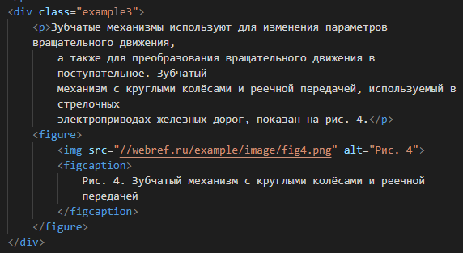

Подрисуночная подпись
Подрисуночная подпись — это текст, который является комментарием к рисунку и его описывает. Такая подпись важна, поскольку она привлекает внимание читателя к иллюстрации и даёт больше информации об изображении.
У элемента <img> существует, конечно, атрибут title, который задаёт текст всплывающей подсказки, но чтобы её получить, приходится наводить курсор мыши на каждый рисунок, что довольно неудобно. Более наглядный способ и, соответственно, более предпочтительный заключается в размещении подрисуночной подписи возле самого изображения.
Для размещения на веб-странице и рисунка, и подписи к нему удобно воспользоваться элементами <figure> и <figcaption>.

Для изменения положения текста — сверху или снизу изображения, достаточно просто поменять местами элементы <img> и <figcaption>.
figure
(от англ. figure — рисунок, иллюстрация) Используется для группирования любых элементов, например, изображений и подписей к ним.
Обычно применяется для иллюстраций, фрагментов кода, схем, графиков, диаграмм и др.
Его содержимое не ограничивается изображениями, допустимо вставлять видео, примеры кода, даже текст. Внутри <figure> при желании добавляется заголовок с помощью элемента <figcaption> до или после содержимого.
Элемент <figure> не должен быть связан с основным текстом, так что если его переместить в другое место, то смысл содержания не потеряется.
К примеру, если добавить иллюстрацию, то в тексте на неё можно сослаться как «...изображена на рис. 2». Сам рисунок при этом может располагаться в другом месте, а не только идти сразу же после текста, главное, не забыть его подписать.
И, наоборот, неверным шагом будет воспользоваться <figure> и сослаться на него как «смотри рисунок ниже». Потому что при перемещении иллюстрации искажается смысл текста.

Зубчатые механизмы используют для изменения параметров вращательного движения, а также для преобразования вращательного движения в поступательное. Зубчатый механизм с круглыми колёсами и реечной передачей, используемый в стрелочных электроприводах железных дорог, показан на рис. 4.

Содержимое <figure> выравнивается по левому краю и к нему добавляются небольшие отступы, это заметно по картинке, она отступает немного вправо относительно левого края текста.
figcaption
(от англ. figure caption — подпись к рисунку) Содержит описание для элемента <figure>.
<figcaption> должен быть первым или последним элементом в группе.